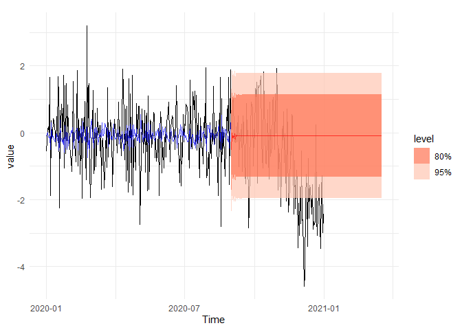
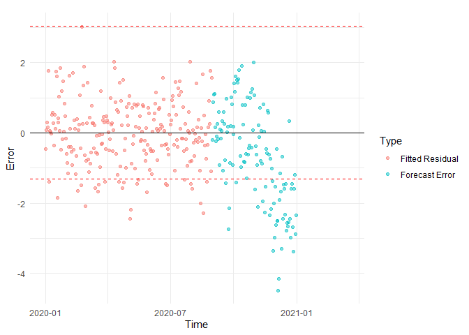

The goal of the riceblast R package is to provide data and tools for forecasting rice blast disease outbreaks using weather-based parameters. It combines climate variables (such as temperature, humidity, and rainfall) with knowledge of disease development to build predictive models and early warning systems. The package helps researchers, agronomists, and policymakers understand and anticipate disease risks, supporting sustainable management strategies to reduce crop losses and improve food security.
Installation
You can install the development version of riceblast from GitHub with:
# install.packages("pak")
pak::pak("pridiltal/riceblast")Proposed framework
The following figure summarizes the proposed framework for climate-based blast disease monitoring, comprising two primary phases: an off-line phase and an on-line phase. In the off-line phase, historical climate data characterizing typical behaviour are preprocessed, and an automated model selection procedure is employed to identify the optimal univariate model for a given dataset, which are subsequently fitted to the data. Residuals from these models are then analyzed to estimate field-specific anomalous thresholds using Extreme Value Theory (EVT), providing reference points for the detection of potential disease outbreaks. In the on-line phase, incoming climate data from the test window undergoes preprocessing and forecast generation. Forecast errors are evaluated against the previously determined anomalous thresholds to classify observations as either typical or indicative of a blast alert. This two-phase approach enables both data-driven model calibration and real-time disease risk assessment.

Example
This is an example dataset available in the riceblast package. For more examples, please refer to the package vignettes.
library(riceblast)
head(field1)
#> # A tibble: 6 × 9
#> time d2m t2m stl1 u10 v10 tp type RH
#> <dttm> <dbl> <dbl> <dbl> <dbl> <dbl> <dbl> <chr> <dbl>
#> 1 2020-11-01 01:00:00 298. 298. 299. 1.72 0.487 0 typical 95.8
#> 2 2020-11-01 02:00:00 297. 300. 301. 1.98 0.332 0.00000102 typical 84.5
#> 3 2020-11-01 03:00:00 297. 302. 303. 2.29 0.200 0.00000248 typical 73.2
#> 4 2020-11-01 04:00:00 296. 303. 305. 2.33 0.0884 0.00000291 typical 65.3
#> 5 2020-11-01 05:00:00 295. 304. 307. 2.43 -0.457 0.00000291 typical 56.4
#> 6 2020-11-01 06:00:00 294. 305. 309. 2.47 -1.22 0.00000291 typical 51.4The following example demonstrates the detection of unusually low values (lower extremes) in a daily time series, using a synthetic dataset processed through the riceblast workflow. We first fit a model on an initial “typical” period to estimate the lower extreme threshold and then test whether future observations fall below that threshold. The generated plots visualize both the detected extremes and the corresponding forecast errors.
# Create a sample daily time series dataset with a gradual level shift
base_vals <- rnorm(300)
gradual_shift <- seq(from = 0, to = -3, length.out = 66)
vals <- c(base_vals, rnorm(66) + gradual_shift)
data <- tsibble::tsibble(
date = seq.Date(as.Date("2020-01-01"), as.Date("2020-12-31"), by = "day"),
value = vals,
index = date
)
# Fit the model to estimate the lower extreme threshold using a “typical” period
result <- model_extremes_uni(
full_data = data,
time_col = date,
typical_start = "2020-01-01",
typical_end = "2020-08-30",
response = value,
thr_prob_fit = 0.1,
t_method = "evd",
k=0
)
#> # A tsibble: 243 x 2 [1D]
#> date value
#> <date> <dbl>
#> 1 2020-01-01 0.642
#> 2 2020-01-02 -1.15
#> 3 2020-01-03 -0.384
#> 4 2020-01-04 -1.15
#> 5 2020-01-05 -0.785
#> 6 2020-01-06 -0.948
#> 7 2020-01-07 -0.369
#> 8 2020-01-08 1.15
#> 9 2020-01-09 -0.150
#> 10 2020-01-10 1.10
#> # ℹ 233 more rows
# Prepare a test dataset
test_data <- data |>
dplyr::filter(date > as.Date("2020-06-30")) |>
dplyr::select(date, value) |>
tsibble::as_tsibble(index = date)
# Evaluate future values against the learned extreme threshold
test_result <- riceblast::test_extremes_uni(result, test_data = test_data, h = 200)
# # Generate and view plots for extremes and errors
plots <- plot_extreme_analysis_uni(test_result)
#> Plot variable not specified, automatically selected `.vars = .fitted`
# Visualize future forecasts relative to the typical historical behaviour
plots$main_plot
# Visualize detected extremes using the residual and forecast error plots
plots$error_plot
#> Warning: Removed 77 rows containing missing values or values outside the scale range
#> (`geom_point()`).
Funding
This R package was developed under the interdisciplinary project titled “Weather-based Blast Disease Forecasting and Early Warning Systems for Climate Risk Adaptation”, funded through the National Agricultural Research Plan (NARP) initiative of the Sri Lanka Council for Agricultural Research Policy (SLCARP) -2024.
Project team members
Chandima Ariyarathna, Department of Botany, University of Peradeniya
Priyanga Dilini Talagala, Department of Computational Mathematics, University of Moratuwa
Sachith P. Abesundara, Department of Statistics and Computer Science, University of Peradeniya
Mahlon Pragath Rambukkange, Department of Geography, University of Peradeniya
Isuru Madugalla, Department of Statistics & Computer Science, University of Peradeniya.
K.R.D. Gunapala, Rice Reaserch and Development Institute, Batalagoda
H.N.S. Fernando, Rice Reaserch and Development Institute, Batalagoda
Shashika Weerakoon, University of Peradeniya.